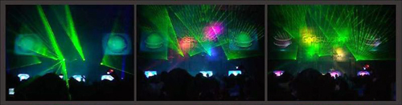

EuroDance-Stöckchen: Meine drei "Lieblingslieder"

So, jetzt gehts zur Sache: Der aufmerksame Leser hat sicherlich schon die Gänsefüßchen registriert, die sich um das Wort Lieblingslieder scharen, und so soll es in diesem Beitrag denn auch nicht um Musik gehen, die mein Herz höher schlagen lässt, sondern um Geschmacklosigkeiten, vornehmlich aus dem letzten Jahrzehnt des vorigen Jahrtausends.
Genau genommen aus dem Bereich "EuroDance". In dieser Sparte wurden viele musikalische Verbrechen begangen, oftmals des schnöden Mammons wegen. Um dies wieder in das kollektive Gedächtnis zurückzurufen, werde ich meine drei Favoriten dieses Genres hier posten. Viel Spaß nach dem Klick!
Scooter - Hyper Hyper
Ich weiß gar nicht genau, ob es sich hierbei um EuroDance handelt. Genau genommen würde ich gar nicht so weit gehen "Hyper Hyper" als Musik zu bezeichnen. Allerdings ist dieser Song der Grundstein für eine Karriere, die mittlerweile schon viel zu lange dauert. Von daher musste er rein.
Rednex - Cotton-Eyed Joe
Lupenreiner EuroDance aus Schweden(?). Ein Klassiker der Neunziger, der so gut beim Publikum ankam, dass der Nachfolger "Old Pop In An Oak" direkt die gleiche Melodie verpasst bekommen hat.
DJ Bobo - There Is A Party
DJ Bobo muss auf jeden Fall in die Auswahl. Der "fesche" Schweizer macht nicht nur seit Jahren schlechte Musik, er verschwendet obendrein auch keinen Gedanken daran endlich mal in Rente zu gehen. Und dass, obwohl seine Rap Skillz seit 20 Jahren schlicht und ergreifend nicht existent sind, und er beharrlich weiter seine Ludenmatte auf dem Kopf trägt, obwohl ihm die Geheimratsecken schon am Nacken kitzeln.
DJ Bobo geht überhaupt nicht klar. Bevor ich mit dem in einem Raum sitze, gehe ich lieber mit Scooter und Rednex zusammen saunieren, inklusive anschließendem, gegenseitigen Auspeitschen mit Brennesseln.
So, das war meine Auswahl. Allerdings wurde damals noch viel mehr verbrochen. Um das an die Oberfläche zu spülen, werfe ich das EuroDance-Stöckchen mal nach Hamburg, nach Rostock, nach Rastede, nach Riedstadt, nach U9Tupfing, nach Berlin und runter nach München. Viel Spaß damit.
Die Autorenschaft von "Phase 5" ist natürlich auch herzlich eingeladen, an der musikgeschichtlichen Aufarbeitung der Neunziger teilzunehmen.
Bild: GodsKitchen_08-10-05 Melbourne Park (1) von Kit Haselden Photography unter CC-Lizenz
9 Kommentare zu "EuroDance-Stöckchen: Meine drei "Lieblingslieder""
- Externe Links im selben Fenster öffnen
- Externe Links in neuem Fenster öffnen
Web2.0Du.de
http://web2.0du.de/blog/eurodance_multiple_ohrgasmen_zur_mittagszeit/
Web2.0Du.de
Ohrenkrebs..
TediousNilsen
boahhh. leude, wir dürfen diesen müll nicht immer wieder ausgraben. das ist wie fußpilz, der kommt auch immer wieder.
Rick
Melde hiermit gehorsamst den ordnungsgemäßen Vollzug der rituellen Verblogstockung...
crucible
Jawoll! Hier auch:
http://www.generator-x.de/euter-pop-und-ethno-disco/